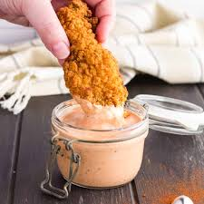

Canes Sauce copycat
Ingredients

- Ketchup
- Mayonaise
- Worcestershire sauce
- garlic powder
- salt
- Black pepper
Recipe
- add 4.4 oz mayonnaise 1/2 cup and 2.6 oz ketchup 3 Tbsp.
- Then add 1.5 Tbsp Worcestershire sauce in a pinch, use balsamic vinegar, soy sauce, or fish sauce
- After that add 1 tsp garlic powder, 1/2 tsp black pepper coarse and 1/2 tsp salt
Home Page